Insert and link to Odoo data¶
Several elements from your Odoo database can be inserted into an Odoo spreadsheet, namely:
lists, i.e., data from a list view
pivot tables, i.e., data from a pivot view
charts, i.e., data from a graph view
Each time a list, pivot table, or chart is inserted, a data source is created. This data source connects the spreadsheet to your Odoo database, retrieving up-to-date information every time the spreadsheet is opened, the browser page is reloaded, or data is manually refreshed by clicking from the menu bar.
Inserted lists and inserted pivot tables use formulas with Odoo-specific list functions and pivot table functions to retrieve data from your database and can be further manipulated in the spreadsheet. Certain elements of inserted charts can be modified, but no data manipulation or computation is possible.
注釈
Lists, pivot tables, and charts from different apps and models can be inserted into the same spreadsheet.
ちなみに
If you intend to use global filters to dynamically filter Odoo data in a spreadsheet or dashboard, do not use the same conditions to establish the initial list, pivot table, or chart in your database.
It is also possible to:
add clickable links to Odoo menu items, to other sheets of the same spreadsheet, or to external URLs
insert financial data from your Odoo database using Odoo-specific spreadsheet functions
paste data from another Odoo spreadsheet, Excel spreadsheet, or Google Sheet directly into any Odoo spreadsheet
Data sources¶
Data sources, which are created each time a list, pivot table or graph is inserted into an Odoo spreadsheet, connect the spreadsheet and the relevant model in your database, keeping the data in the spreadsheet up-to-date.
Each data source is defined by properties that can be accessed via the Data menu. Data sources are identified by their respective (pivot table), (list) or (chart) icon, followed by their ID and name, e.g., (#1) Sales Analysis by Product.
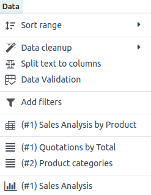Clicking on a data source opens the related properties in a pane on the right of the spreadsheet.
ちなみに
The properties pane can also be opened by right-clicking any cell of an inserted list or pivot table, then clicking See list properties or See pivot properties, or by clicking the (menu) icon at the top right of an inserted chart, then clicking Edit.
Once the properties of a specific data source are open, they remain open even when navigating between spreadsheet tabs. To close the properties pane, click the (close) icon at the top right of the pane.
注釈
Deleting an inserted list or pivot table, or deleting the sheet into which it was inserted, does not delete the underlying data source. The data source of an inserted list or pivot table can only be deleted via the data source's properties.
A warning in the Data menu identifies any data sources for which the corresponding list or pivot table no longer appears in the spreadsheet.
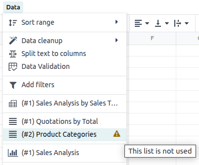Deleting an inserted chart, on the other hand, also deletes the underlying data source.
Insert a list¶
重要
Before inserting a list in a spreadsheet, ensure the list is tailored to your needs. Consider which fields should be visible as well as how the records are filtered and/or sorted. This can impact both the loading time and the user-friendliness of your spreadsheet.
To insert a list:
With the relevant list view open in your database, click the (Actions) icon beside the name of the view, then .
注釈
To insert only specific records, select the relevant records, click the Actions button that appears at the top center of the screen, then Insert in spreadsheet.
In the window that opens, edit the Name of the list if needed.
The list name is used in the sheet name and in the list properties.
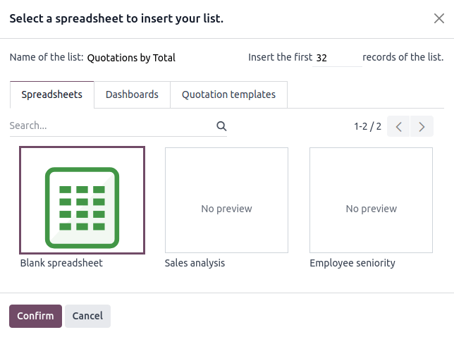Edit the number of records, i.e., rows, to be inserted if needed.
By default, the number shown is the number of records visible on the first page of the list. For example, if the list contains 150 records but only 80 are visible, this field will show 80.
注釈
While the data in your list is kept up to date thanks to the connection to your database, an inserted list will not automatically expand to accommodate new records, e.g., a new product category or a new salesperson.
If you anticipate new records being added, consider adding extra rows when inserting the list. Records/rows can also be added manually after the spreadsheet has been inserted.
Example
Your company currently has ten product categories and you insert this list in a spreadsheet. If an 11th product category is created and your inserted list only had ten rows, the new category will be inserted in the appropriate position in the spreadsheet, thereby removing an existing category.
One way to avoid this is to add extra rows when inserting the list.
Click Blank spreadsheet or select in which existing spreadsheet the list should be inserted.
注釈
New spreadsheets are saved in the Odoo Documents app in either the My Drive personal workspace or, if file centralization has been enabled for spreadsheets, in the Spreadsheet workspace.
Click Confirm.
The list is inserted into a new sheet in the spreadsheet. The sheet tab in the bottom bar shows the name of the list followed by the list ID, e.g., Quotations by Total (List #1). A pane on the right side of the screen shows the list properties.
ちなみに
To view an individual record of an inserted list, right-click on any cell of the relevant row, then click See record. To return to the spreadsheet, click the name of the spreadsheet in the breadcrumbs at the top of the page.
To sever the link between an inserted list and your database, select the entire list, right-click and select Copy then right-click again and select .
Do not modify the list ID in the sheet name, as the inserted list retains this ID for the lifetime of the spreadsheet. This list ID is used in the spreadsheet functions that retrieve data from your database.
List functions¶
When a list is inserted into a spreadsheet, the following functions are used to retrieve the header and field values, respectively:
=ODOO.LIST.HEADER(list_id, field_name)
=ODOO.LIST(list_id, index, field_name)
The arguments of the function are as follows:
list_id: the ID assigned when the list is inserted. The first list inserted into a spreadsheet is assigned list ID1, the second, list ID2, etc.index: identifies the line on which the record appeared in the list before insertion. The first line has an index of1, the second an index of2, etc.field_name: the technical name of the field.
ちなみに
Clicking on an individual cell displays the related formula, if relevant, in the formula bar. To display all the formulas of a spreadsheet at the same time, click on the menu bar. The example below shows the functions used to retrieve list headers and values.
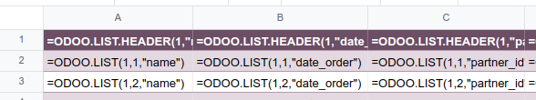リストプロパティ¶
The list properties appear on the right side of the screen when a list is inserted. They can be accessed at any time via the Data menu by clicking the relevant list, as prefaced by the (list) icon, or by right-clicking anywhere on the list and clicking See list properties.
The following list properties are shown, some of which can be edited:
List #: the list ID. List IDs are assigned sequentially as additional lists are inserted into the spreadsheet.
List Name: the name of the list. Edit this if needed. Note that editing the list name in the list properties does not modify the list name shown in the sheet name, and vice versa.
Model: the model from which the data has been extracted.
Columns: the fields of the model that were visible when the list was inserted.
Domain: the rules used to determine which records are shown. Click Edit domain to add or edit rules.
注釈
When global filters are used, this domain is combined with the selected values of the global filter before the data is loaded into the spreadsheet.
Sorting: how the data is sorted, if applicable. To add a sorting rule, click Add, select the field, then choose whether sorting should be Ascending or Descending. Delete a sorting rule by clicking the (delete) icon.
To duplicate or delete a list's data source, click the (gear) icon, then click Duplicate or Delete as relevant.
Manage an inserted list¶
Once a list from an Odoo database has been inserted into an Odoo spreadsheet, you can:
add records, i.e., rows
add fields, i.e., columns
duplicate the list to create a new, identical data source
Add records/rows to a list¶
To add records to a list, use one of the following methods:
Select the last row of the table, then hover over the blue square until the plus icon appears. Click and drag down to add the desired number of rows. The cells of the new rows are populated with the appropriate formula to retrieve the list values. If there is corresponding data in your database, the cells are populated.
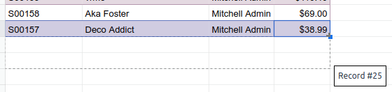Position your cursor in the top left cell of the sheet, click from the menu bar, then select the appropriate list. In the pop-up window, indicate the number of records to insert and click Confirm. An updated list is inserted, overwriting the previous list.
ちなみに
The above methods can also be used to add additional blank rows to your spreadsheet table. This may be useful for lists where you expect additional records to be generated in your database, e.g., new product categories or new salespersons.
Add fields/columns to a list¶
To add fields/columns to a list:
Select the column to the right or left of where the new column should be inserted.
Click then or from the menu bar, or right-click then Insert column left or Insert column right as appropriate.
Copy the header cell of any column, paste it into the header cell of the new column, and press
Enter.Double-click the new header cell then click on the field name that appears in quotation marks at the end of the formula; a list of all the technical names of the fields of the related model appears.
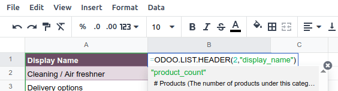Select the appropriate field name and press
Enter. The field's label appears in the header.ちなみに
To know a field's technical name, navigate to the relevant view, activate developer mode, then check the field name by hovering over the question mark beside a field's label.
With the header cell selected, double-click on the blue square in the bottom-right corner. The cells of the column are populated with the appropriate formula to retrieve the list values. If there is corresponding data in your database, the cells are populated.
Duplicate a list¶
Duplicating a list via the list's properties creates an additional data source. This allows for different manipulations to be performed on the same data within one spreadsheet.
With the list properties open, click the (gear) icon then Duplicate.
The new data source is assigned the next available list ID. For example, if no other lists have been inserted in the meantime, duplicating List #1 results in the creation of List #2.
Unlike when you insert a list, a duplicated list is not automatically inserted into the spreadsheet. To insert it, perform the following steps:
Add a new sheet by clicking the (add sheet) icon at the bottom left of the spreadsheet.
Click from the menu bar, then select the appropriate list.
Define the number of records to insert and click Confirm.
Edit the List Name in the properties pane if needed.
Rename the sheet by right-clicking on the sheet tab, selecting Rename, and entering the new sheet name.
注釈
Duplicating an inserted list by copying and pasting it or by duplicating the sheet into which it has been inserted does not create a new data source. Any changes made to the list's properties would therefore impact any copies of the list.
Delete a list¶
To fully delete a list and the underlying data source from a spreadsheet, perform the following steps in any order:
Delete the spreadsheet table using your preferred means, e.g., via keyboard commands, spreadsheet menus, or by deleting the sheet. This deletes the visual representation of the data.
From the properties pane of the relevant list, click the (gear) icon then Delete. This deletes the data source of the list from the spreadsheet.
Insert a pivot table¶
ちなみに
Converting an inserted pivot table to a dynamic pivot table allows you to add, remove, and manipulate dimensions (i.e., columns and rows) and measures. It is therefore possible to insert a basic pivot table with minimal configuration, convert it to a dynamic pivot table, then refine it directly in the spreadsheet.
To insert a pivot table:
With the relevant pivot view open in your database, click Insert in Spreadsheet.
In the window that opens, edit the Name of the pivot if needed.
This name is used in the sheet name and in the pivot table properties.
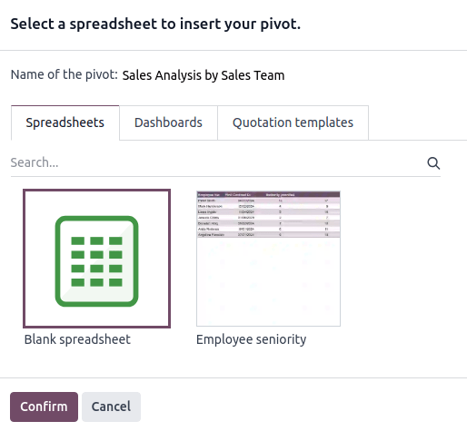Click Blank spreadsheet or select in which existing spreadsheet the pivot table should be inserted.
注釈
New spreadsheets are saved in the Odoo Documents app in either the My Drive personal workspace or, if file centralization has been enabled for spreadsheets, in the Spreadsheet workspace.
Click Confirm.
The pivot table is inserted into a new sheet in the spreadsheet. The sheet tab in the bottom bar shows the name of the pivot table followed by the pivot table ID, e.g., Sales Analysis by Sales Team (Pivot #1). A pane on the right side of the screen shows the pivot table properties.
ちなみに
To view the records referenced by an individual cell of a pivot table, right-click on the cell, then click See record. To return to the spreadsheet, click the name of the spreadsheet in the breadcrumbs at the top of the page.
To sever the link between an inserted pivot table and your database, select the entire pivot table, right-click and select Copy, then right-click again and select .
Do not modify the pivot table ID in the sheet name, as the inserted pivot table retains this ID for the lifetime of the spreadsheet. This pivot table ID is used in the spreadsheet functions that retrieve data from your database.
Pivot table functions¶
An inserted pivot table that has not been converted to a dynamic pivot table uses the following functions to retrieve the header and field values, respectively:
=PIVOT.HEADER(pivot_id, [domain_field_name, …], [domain_value, …]) =PIVOT.VALUE(pivot_id, measure_name, [domain_field_name, …], [domain_value, …])
The arguments of the functions are as follows:
pivot_id: the ID assigned when the pivot table is inserted. The first pivot table inserted in a spreadsheet is assigned pivot ID1, the second, pivot ID2, etc.measure_name: the technical name of what is being measured, followed by the type of aggregation, e.g.,product_uom_qty:sum.domain_field_name: the technical name of the field used as a dimension, e.g.,user_id, or, if the dimension is a time period, the technical name of the date field, followed by the time period, e.g.,date_order:month.domain_value: the ID of the record, or, if the dimension is a time period, the date or time period targeted.
ちなみに
Clicking on an individual cell displays the related formula, if relevant, in the formula bar. To display all the formulas of a spreadsheet at the same time, click on the menu bar. The example below shows the functions used to retrieve headers and values of a static pivot table.
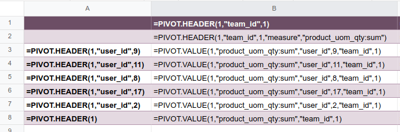Pivot table properties¶
The pivot table properties appear on the right side of the screen when a pivot table is inserted. They can be accessed at any time via the Data menu by clicking the relevant pivot table, as prefaced by the (pivot) icon, or by right-clicking anywhere on the pivot table and clicking See pivot properties.
The following pivot table properties are shown, some of which can be edited:
Pivot #: the pivot table ID. Pivot table IDs are assigned sequentially as additional pivot tables are inserted in the spreadsheet.
Name: the name of the pivot table. Edit this if needed. Note that editing the name in the pivot table properties does not modify the name shown in the sheet name, and vice versa.
Model: the model from which the data has been extracted.
Columns and Rows: dimensions you are using to categorize or group data from the model.
Measures: what you are measuring, or analyzing, based on the dimensions you have chosen.
ちなみに
If you attempt to make changes to the columns, rows, or measures of a pivot table that has just been inserted into a spreadsheet, an error appears at the top right of the screen.
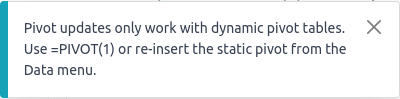To be able to manipulate a pivot table's properties, convert a static pivot table to a dynamic pivot table.
Domain: the rules used to determine which records are shown. Click Edit domain to add or edit rules.
注釈
When global filters are used, this domain is combined with the selected values of the global filter before the data is loaded into the spreadsheet.
To duplicate or delete a pivot table's data source, click the (gear) icon then Duplicate or Delete.
Manage an inserted pivot table¶
Once a pivot table from an Odoo database has been inserted into an Odoo spreadsheet, you can:
convert it to a dynamic pivot table to be able to manipulate the dimensions and measures
duplicate the pivot table to create a new, identical data source
Duplicate a pivot table¶
Duplicating a pivot table via the pivot table's properties creates an additional data source. This allows for different manipulations to be performed on the same data within one spreadsheet.
For example, you can see the same data aggregated by different dimensions or use global filters to offset the date and create pivot tables that compare the current period's data with a previous period.
To duplicate a pivot table, perform the following steps:
With the pivot table properties open, click the (gear) icon then Duplicate.
The duplicated pivot table is automatically inserted into a new sheet in the spreadsheet, with the pivot table properties open in the right pane.
Edit the Name in the properties pane and the sheet tab if needed.
The new data source is assigned the next available pivot table ID. For example, if no other pivot tables have been inserted in the meantime, duplicating Pivot #1 results in the creation of Pivot #2.
注釈
Duplicating an inserted pivot table by copying and pasting it or by duplicating the sheet does not create a new data source. Any changes made to the pivot table's properties would therefore impact any copies of the pivot table.
When a pivot table is duplicated, the new pivot table is by default a dynamic pivot table.
Delete a pivot table¶
To fully delete a pivot table and the underlying data source from a spreadsheet, perform the following steps in any order:
Delete the spreadsheet table using your preferred means, e.g., via keyboard commands, spreadsheet menus, or by deleting the sheet. This deletes the visual representation of the data.
From the properties pane of the relevant pivot table, click the (gear) icon then Delete. This deletes the data source of the pivot table.
Insert a chart¶
To insert a chart from an Odoo database into an Odoo spreadsheet:
With the relevant graph view open in your database, click Insert in Spreadsheet.
In the window that opens, edit the Name of the graph if needed.
Click Blank spreadsheet or select in which existing spreadsheet the chart should be inserted.
注釈
New spreadsheets are saved in the Odoo Documents app in either the My Drive personal workspace or, if file centralization has been enabled for spreadsheets, in the Spreadsheet workspace.
Click Confirm.
Charts are inserted on the first sheet of the spreadsheet.
ちなみに
Clicking on a data point in a chart opens the relevant list view in the database. In the example,q clicking on Jessica Childs opens the list view of all sales by this salesperson that match the domain of the chart.
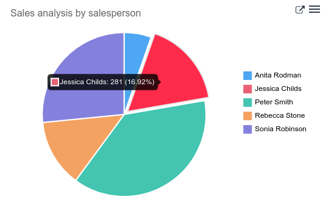Chart properties¶
When you insert a chart into a spreadsheet, the chart properties appear on the right side of the screen. Access these at any time via the Data menu by clicking the relevant chart, as prefaced by the (chart) icon. Alternatively, hover over the chart then click the (menu) icon and click Edit.
In the chart properties, the Configuration and Design tabs let you modify various elements of the chart.
設定¶
The Configuration tab includes the following sections:
Chart type: the type of chart. By default, this indicates the type of chart you selected in the graph view in the database before inserting the chart in the spreadsheet.
After a chart has been inserted, more chart types are available. Click the dropdown menu to select the most appropriate chart type for the data.
Line: best for showing trends or changes over time, such as sales growth across months or temperature variations.
Stacked Line: useful for visualizing cumulative trends where multiple series contribute to a total, like revenue by department over time.
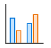Column: ideal for comparing values across discrete categories, such as sales per product or revenue by region.
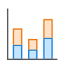Stacked Column: displays part-to-whole relationships within categories, such as regional contributions to total sales.
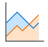Area: similar to a line chart but fills the area beneath the lines to emphasize magnitude, perfect for cumulative metrics over time.
Stacked Area: visualizes the composition of changes over time, such as market share by product category.
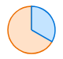Pie: best for showing proportions or percentages of a whole, such as market share or budget allocation.
When creating a chart from spreadsheet data, rather than inserting one from a graph view, the following chart types are also available:
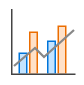Combo: combines multiple chart types (e.g., bars and lines) to compare different data types or highlight key metrics alongside trends.
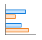Bar: similar to a column chart but horizontal, making it better for comparing long category names or datasets.
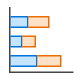Stacked Bar: highlights cumulative contributions across categories, often used in demographic or resource allocation analysis.
Doughnut: A variation of the pie chart with a hollow center, offering similar use cases but with a modern aesthetic.
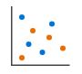Scatter: ideal for analyzing relationships or correlations between two numerical variables, such as price vs. quantity sold.
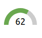Gauge: displays progress toward a goal or a single key metric, such as performance against a target.
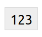Scorecard: used to summarize key performance indicators (KPIs) in a compact format, such as total sales or conversion rates, and compare to a baseline or a previous value.
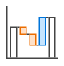Waterfall: ideal for visualizing cumulative effects of sequential positive and negative values, such as profit/loss analysis.
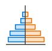Population Pyramid: a specialized chart for comparing distributions, often used in demographics, such as age and gender group analysis.
Domain: the rules used to determine which records are shown. Click Edit domain to add or edit rules.
Link to Odoo menu: to add a clickable link from a chart to an Odoo menu item, i.e., a specific view of a model.
デザイン¶
Depending on the chart type, the Design tab has one or more sections.
The General section lets you modify the following elements:
Background color: Add or change the background color by clicking on the color dot. Choose one of the standard colors or click the icon to manually select a custom color.
Chart title: Edit the chart title, if needed. The font formatting, horizontal alignment and color of the title can be modified using the editor.
Vertical axis position: Choose whether the vertical axis is placed on the left or right in line, column, and area charts.
Legend position: Change the position of the legend or opt to have no legend.
Enable Show values to add numeric values to the data points on the chart.
Enable Show trend line to add a trend line to line, column, and area charts.
For line, column, and area charts, the Axis section lets you add a title to one or both axes. The font formatting, horizontal alignment, and color of the title can be modified using the editor.
Insert clickable links¶
Adding links to related or supporting information can make your report or dashboard more user-friendly and effective.
You can insert a clickable link from any spreadsheet cell to:
an Odoo menu item
another sheet inside the same spreadsheet
an external URL
注釈
Clicking a link to a menu item provides the same result as navigating via the Odoo menu within an app, e.g., the menu item Sales/Orders/Quotations corresponds to the default view when navigating to .
It is also possible to insert a clickable link to a specific view of a model in a spreadsheet starting from the view itself. However, as this method inserts each new link in a new sheet, it is more efficient to create links to specific views starting from the spreadsheet.
You can insert a clickable link from any chart to an Odoo menu item.
Insert a clickable link from a cell¶
To insert a clickable link from a cell:
Click from the menu bar or right-click on the cell, then click Insert link. Next, depending on the desired outcome, perform one of the following actions:
Click the (menu) icon, then Link an Odoo menu. Select the relevant menu item from the list or click Search more to choose from a list of all menu items. Click Confirm.
Click the (menu) icon, then Link sheet, then choose the relevant sheet from the current spreadsheet.
Under Link, type a URL.
Enter or edit the label for the link in the Text field.
Click Confirm.
Insert a clickable link from a chart¶
To insert a clickable link from a chart to an Odoo menu item:
Hover over the top right of the chart's box, then click the (menu) icon, then Edit. The chart properties appear at the right of the screen.
At the bottom of the Configuration tab of the chart properties pane, click under Link to Odoo menu, then select a menu.
Hover over the top right of the chart's box to see that a new (external link) icon has been added.
Insert financial data¶
When building reports and dashboards, it may be useful to include certain accounting-related data, such as account IDs, credits and debits for specific accounts, and dates of the start and end of the tax year.
Odoo-specific spreadsheet functions allow you to retrieve such accounting data from your database and insert it into a spreadsheet.